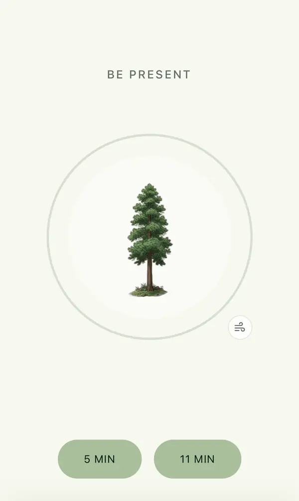
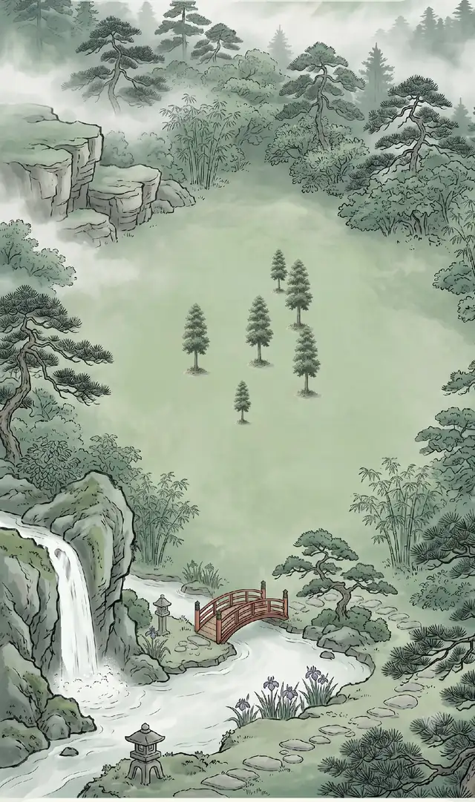
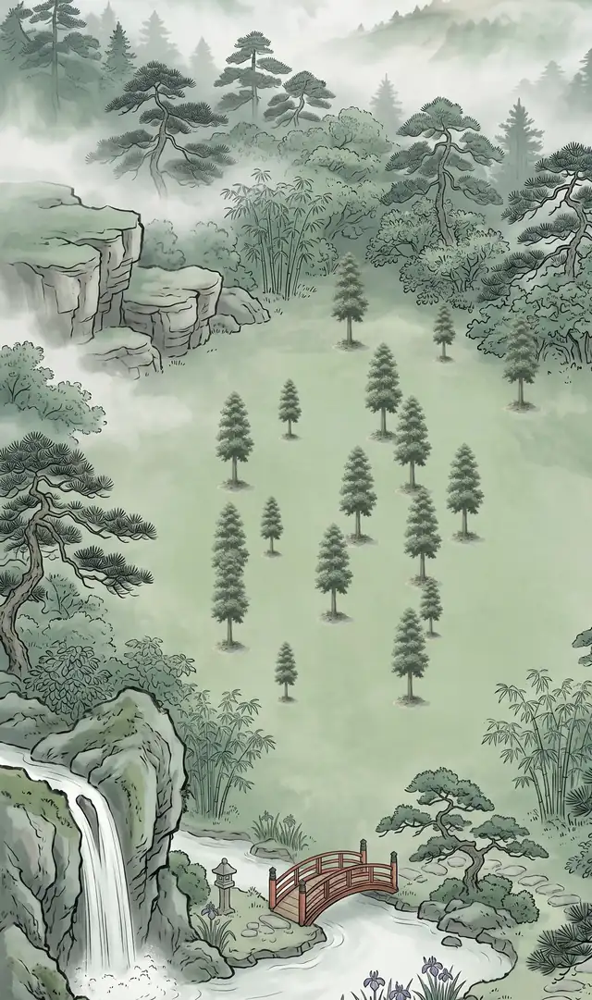
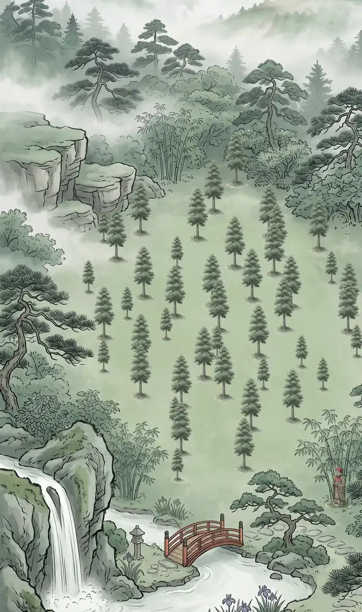
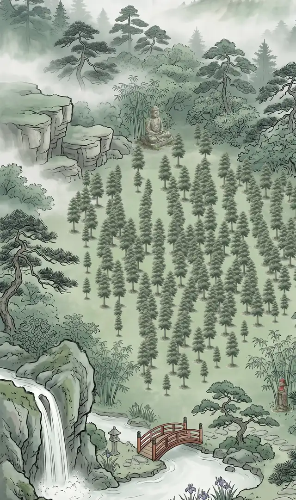
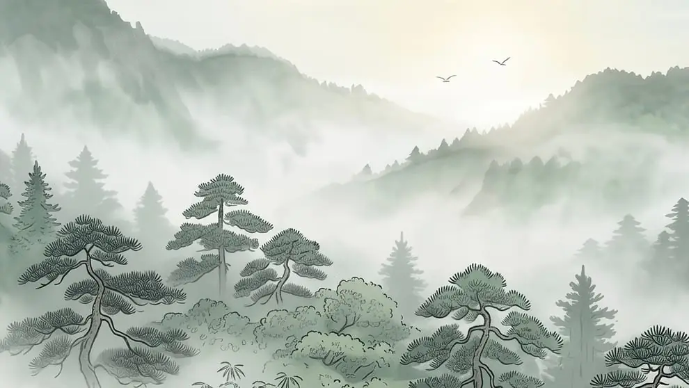

How a sit works
Open it, pick a length, and sit.
- Pick 5 or 11 minutesFive counts as fully as eleven. A bus ride is long enough.
- Lock your phone and sitLocking the phone is part of the sit. Leave the app for something else and it won't count.
- The bell rings, and a tree is plantedA wind chime ends the sit, even with the phone locked.

Your forest
A practice, one sit at a time.
Every sit plants a cedar in a painted valley. Look back and see what showing up looks like.




One sit, one tree.
What it is
A timer, a bell, and a forest. Nothing to follow.
- No voice talking you through itYou sit in silence until the bell. Nothing to listen to, nothing to keep up with.
- Eleven minutes, on purposeA nod to kintsugi, the Japanese art of mending broken pottery with gold.
- No accountYour sits are kept on your phone. There is nothing to sign up for.
- Built for the long runThe change comes slowly, with practice. The app doesn't promise a new you in a week.

Start with five minutes.
The bell, the silence, and your first tree.
Get it on the App Store
For iPhone